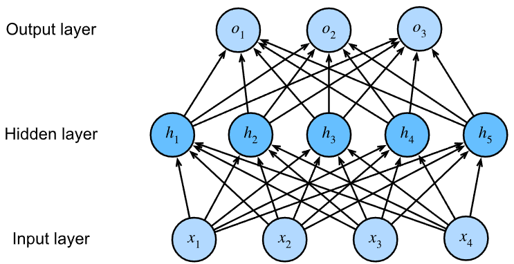
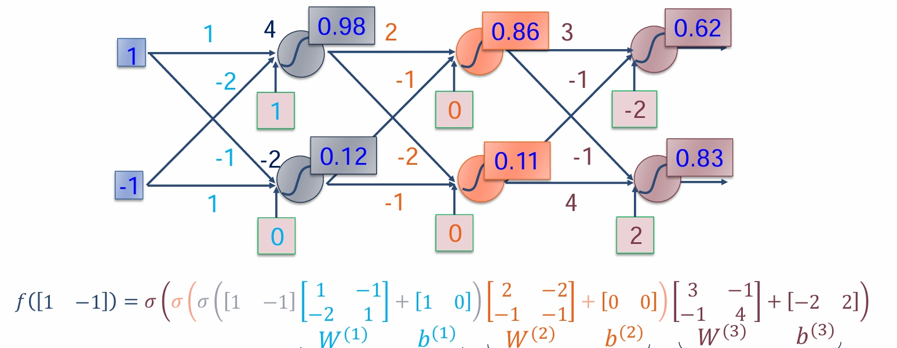
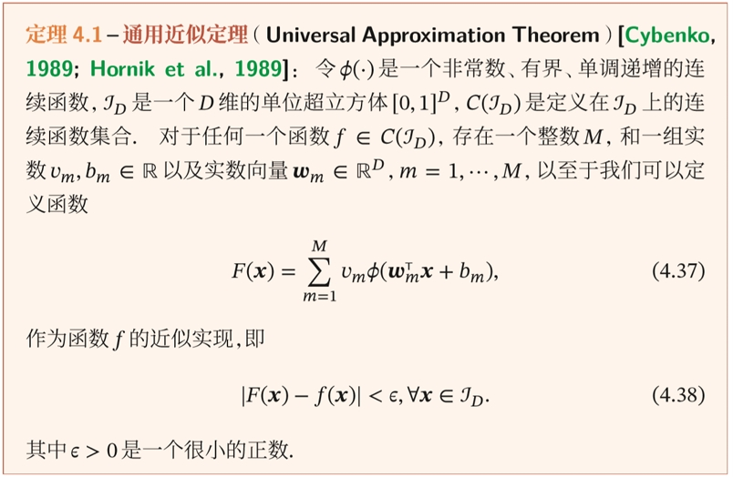
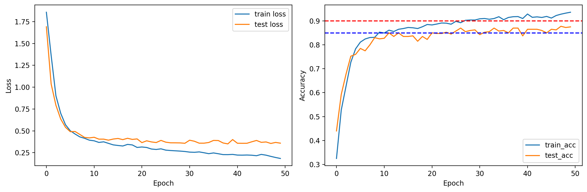

MLP-多层感知机
写在开头
最近在学习深度学习中的简单模型——多层感知机（Multilayer Perceptron 简称 MLP），将学习内容和代码模板、实例记录一下，以便后续利用。
多层感知机原理
一句话总结，通过在线性模型中加入隐藏层来克服线性模型的限制，使得该结构有逼近任意真实函数的能力。

数据流流动
MLP 的每一层的节点间都是全连接的，数据从前向后流动，层与层之间和线性模型类似，是一个线性组合函数。每一层得到运算结果后，还会叠加一次激活函数，再作为下一层的输入。

图中 $\sigma $ 就是激活函数。
数学原理
模型退化
模型退化是指一个复杂模型退化到一个简单模型的情况，即利用简单模型就可以发挥复杂模型的全部性能。MLP 就存在这样的情况，在每一层都表达线性函数的条件下 MLP 将会退化为线性模型。简单来讲，这是因为线性函数叠加线性函数还是线性函数。所以无论叠加多少层隐藏层，本质上都是线性函数的叠加，最终得到的输入输出之间的关系仍然是线性的。
而线性模型能表示所有输入输出之间是线性的情形，此时用线性模型就能表达上述 MLP 所表达的函数。因而 MLP 失去了本应有的作用。
理解有困难的话可以想这个例子:
$$X(t) = at + b,Y(t) = ct + d$$那么，将这个函数叠加就是：
$$Y(X(t)) = c(at + b) + d = cat + (b + d)$$它本质上还是线性函数，用线性模型就能表达，不需要用 MLP。
激活函数
为了避免上述情况，需要在每一层引入一个激活函数，这是一种非线性函数，每一层首先通过线性组合输入得到输出后，需要经过激活函数的处理才能作为下一层的输入。
由于函数之间叠加了非线性函数，这样就保证了 MLP 不回退化到线性模型的情形。
激活函数有很多，下面举几个常用的激活函数：
- ReLu 函数： $${\mathop{\rm Re}\nolimits} LU(x) = \left\langle \matrix{ x \ldots x \ge 0 \hfill \cr 0 \ldots {\rm{x}} \prec {\rm{0}} \hfill \cr} \right.$$
- Logistic 函数： $$f(x) = {1 \over {1 + {e^{ - x}}}}$$
- Tanh 函数：
$$f(x) = {{{e^x} - {e^{ - x}}} \over {{e^x} + {e^{ - x}}}}$$
通用近似定理

这个定理就是支持 MLP 有效性的根本定理，根据通用近似定理，对于具有线性输出层和至少一个使用“挤压”性质的激活函数的隐藏层组成的前馈神经网络，只要其隐藏层神经元的数量足够，它可以以任意的精度来近似任何从一个定义在实数空间中的有界闭集函数。
也就是说，哪怕只有一层隐藏层，只要神经元数量足够，也可以任意逼近真实函数。但实际中使用多层隐藏层是因为这样的设计会让训练开销更少。
MLP 进行分类任务
肥胖风险类型预测
实例来源：https://www.kaggle.com/competitions/playground-series-s4e2
数据描述
在这个实验中，我们将使用深度学习来预测肥胖风险类型，数据集 ORTP_2000.csv 包含了 2000 个人的特征，我们将使用这些特征来预测个体的肥胖风险类型。以下是数据集中相关变量的描述：
- Gender: 性别（男/女）
- Age: 年龄（岁）
- Height: 身高（米）
- Weight: 体重（千克）
- family_history_with_overweight: 是否有超重家族史（是/否）
- FAVC: 是否经常食用高热量食物（是/否）
- FCVC: 蔬菜摄入频率（1 到 3 级）
- NCP: 每日主餐次数
- CAEC: 进食零食的频率（有时、经常、总是、无）
- SMOKE: 是否吸烟（是/否）
- CH2O: 每日饮水量（升）
- SCC: 是否监测卡路里摄入（是/否）
- FAF: 体育活动频率（0 到 3 级）
- TUE: 使用电子设备的时间（0 到 2 级）
- CALC: 饮酒频率（有时、经常、总是、无）
- MTRANS: 主要出行方式（公共交通、汽车、步行等）
- NObeyesdad: 目标变量：肥胖分类（如正常体重、I 型肥胖、II 级超重等）
数据处理
1 | from sklearn.preprocessing import LabelEncoder, StandardScaler, OneHotEncoder, OrdinalEncoder |
对于特征中的有序类别：可按照类别顺序将类别值映射到整数。（eg:（0，1，2））
对于特征中的无序类别：可将每个类别转换为一个独热向量。（eg: [1,0,0] [0,1,0] [0,0,1]）
这样做是为了，在数据中保持有序性和无序性。
数据集的划分与加载
我们按照80%，20%的比例将原数据集分为训练集和测试集。
为了保证实验结果的可复现性，我们设置随机数种子 seed=42。
1 | from sklearn.model_selection import train_test_split |
创建一个ObesityDataset类，继承自torch.utils.data.Dataset，这样方面后续处理与加载。
1 | import torch |
构建 MLP 网络
创建一个多层感知机（MLP）网络，包含一个输入层、任意个隐藏层和一个输出层。其中，输入层的维度为 19，即数据集中的特征数；输出层的维度为 7，即某样本属于各类别的概率值。隐藏层的维度可以自行设置。1
2
3
4
5
6
7
8
9
10
11
12
13
14
15
16
17
18
19
20
21
22
23import torch.nn as nn
class MLP(nn.Module):
def __init__(self, input_size, hidden_size_1, hidden_size_2, hidden_size_3, output_size):
super(MLP, self).__init__()
self.net = nn.Sequential(nn.Flatten(),
nn.LazyLinear(hidden_size_1),
nn.ReLU(),
nn.LazyLinear(hidden_size_2),
nn.ReLU(),
nn.LazyLinear(hidden_size_3),
nn.ReLU(),
nn.LazyLinear(output_size))
def forward(self, x):
return self.net(x)
input_size = X_train.shape[1]
hidden_size_1 = 128
hidden_size_2 = 64
hidden_size_3 = 64
output_size = 7
model = MLP(input_size, hidden_size_1, hidden_size_2, hidden_size_3, output_size)
这里我们设置了 3 层隐藏层，第一层 128 个神经元，第二层和第三层都是 64 个。
隐藏层的设置和每一层神经元数量的配置是随意的，这里就是需要手动调参优化的部分。
设置过少，学习率不佳，欠拟合。
设置过多，学习过度，过拟合。
当然，过拟合也可以通过一些方法自动修正，之后用到时我们再讲。
训练与测试
训练一个 epoch 的代码封装在train_epoch函数中，其中流程如下：
- 遍历训练集，将数据输入模型，得到预测值；
- 计算预测值与真实值之间的差值，然后计算损失；
- 通过反向传播更新模型参数。
- 返回训练集上的平均损失。
然后实现一个eval_model函数来评估模型的性能：1
2
3
4
5
6
7
8
9
10
11
12
13
14
15
16
17
18
19
20
21
22
23
24
25
26
27
28
29
30
31
32
33
34
35
36
37
38
39
40
41
42
43
44
45
46
47
48
49
50
51
52
53
54
55
56
57
58
59
60
61
62
63
64
65
66
67
68
69
70
71
72
73
74
75
76
77
78
79
80
81
82
83
84
85class Accumulator:
def __init__(self, n):
self.data = [0.0] * n
def add(self, *args):
self.data = [a + float(b) for a, b in zip(self.data, args)]
def reset(self):
self.data = [0.0] * len(self.data)
def __getitem__(self, idx):
return self.data[idx]
def train_epoch(net, device, train_iter, loss_fn, optimizer):
"""
将 net 模型在 train_iter 上训练一个 epoch, 并返回训练损失.
Args:
net (torch.nn.Module): The neural network model.
device (torch.device): The device to run the training on (e.g., 'cpu', 'cuda').
train_iter (torch.utils.data.DataLoader): The training data iterator.
loss_fn (torch.nn.Module): The loss function.
optimizer (torch.optim.Optimizer): The optimizer.
Returns:
train_loss (float), train_acc (float)
"""
net.train()
metrics = Accumulator(3)
for X, y in train_iter:
X, y = X.to(device), y.to(device)
y_hat = net(X)
loss = loss_fn(y_hat, y)
optimizer.zero_grad()
loss.backward()
optimizer.step()
metrics.add(loss * len(y), accuracy(y_hat, y) * len(y), len(y))
train_loss = metrics[0] / metrics[2]
train_acc = metrics[1] / metrics[2]
return train_loss, train_acc
def eval_model(net, device, test_iter, loss_fn):
"""
评估 net 模型在 data_iter 上的性能，并返回评估损失.
Parameters:
- net (torch.nn.Module): The neural network model to evaluate.
- device (torch.device): The device to run the evaluation on (e.g., 'cpu', 'cuda').
- data_iter (torch.utils.data.DataLoader): The data iterator.
- loss_fn (torch.nn.Module): The loss function used to evaluate the model.
Returns:
- eval_loss (float), eval_acc (float)
"""
net.eval()
metrics = Accumulator(3)
for X, y in test_iter:
X, y = X.to(device), y.to(device)
y_hat = net(X)
loss = loss_fn(y_hat, y)
metrics.add(loss * len(y), accuracy(y_hat, y) * len(y), len(y))
test_loss = metrics[0] / metrics[2]
test_acc = metrics[1] / metrics[2]
return test_loss, test_acc
def accuracy(y_hat, y_true):
"""
计算y_hat和y_true之间的准确率, 注意y_hat为每一类的概率值, 需要转换为与y_true相同的形状
Parameters:
- y_hat (tensor): Predicted labels tensor of shape (batch_size, num_classes).
- y_true (tensor): True labels tensor of shape (batch_size).
Returns:
- acc (float): The accuracy of the predicted labels.
"""
y_hat = y_hat.reshape((-1, y_hat.shape[-1]))
preds = y_hat.argmax(axis=1).type(y_true.dtype)
compare = (preds == y_true).type(torch.float32)
acc = compare.mean()
return acc
下面是最表层的训练代码，将调用上面的函数：1
2
3
4
5
6
7
8
9
10
11
12
13
14
15
16
17epochs = 50
device = torch.device("cuda" if torch.cuda.is_available() else "cpu")
model = model.to(device)
loss_fn = nn.CrossEntropyLoss()
optimizer = torch.optim.Adam(model.parameters(), lr=0.001)
train_ls, test_ls, train_acc_ls, test_acc_ls = [], [], [], []
for epoch in range(1, epochs + 1):
train_loss, train_acc = train_epoch(model, device, train_loader, loss_fn, optimizer)
test_loss, test_acc = eval_model(model, device, test_loader, loss_fn)
print(
f"Epoch {epoch}/{epochs} - Train Loss: {train_loss:.6f} - Test Loss: {test_loss:.6f} - Train Acc: {train_acc:.6f} - Test Acc: {test_acc:.6f}"
)
train_ls.append(train_loss)
test_ls.append(test_loss)
train_acc_ls.append(train_acc)
test_acc_ls.append(test_acc)
训练结果
画出模型在训练集和测试集上的 Loss 和 Acc 曲线：1
2
3
4
5
6
7
8
9
10
11
12
13
14
15
16
17
18
19
20
21
22
23
24
25import matplotlib.pyplot as plt
%config InlineBackend.figure_format='retina'
fig, axs = plt.subplots(nrows=1, ncols=2, figsize=(12, 4))
# 绘制第一个子图
axs[0].plot(train_ls, label="train loss")
axs[0].plot(test_ls, label="test loss")
axs[0].set_xlabel("Epoch")
axs[0].set_ylabel("Loss")
axs[0].legend()
# 绘制第二个子图
axs[1].plot(train_acc_ls, label="train_acc")
axs[1].plot(test_acc_ls, label="test_acc")
axs[1].axhline(y=0.9, color='r', linestyle='--') # 添加 y=0.9 的参考线
axs[1].axhline(y=0.85, color='b', linestyle='--') # 添加 y=0.85 的参考线
axs[1].set_xlabel("Epoch")
axs[1].set_ylabel("Accuracy")
axs[1].legend()
plt.tight_layout()
plt.show()
本例中训练结果如下：

Best test accuaracy: 0.8775
Best train accuaracy: 0.93625